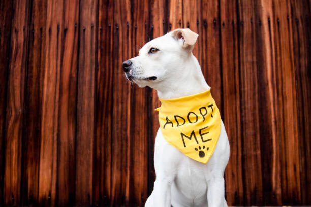
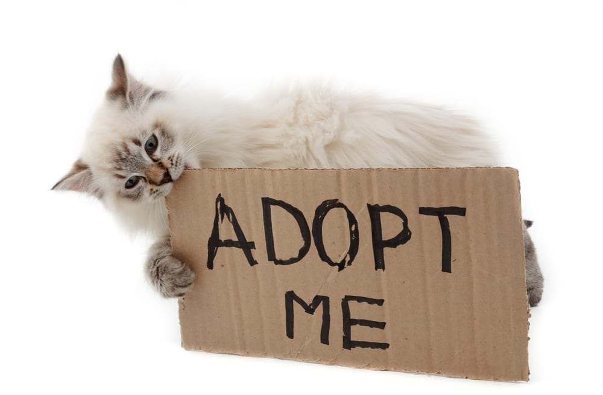
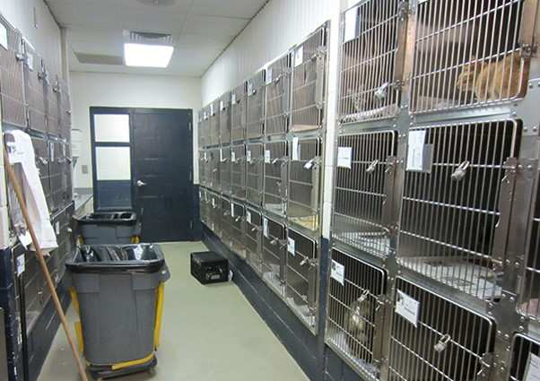

Adopt a pet, support your community
Adoption saves lives and helps local shelters. Below is a sample “available pets” list you can customize with your own research or local shelter information.
Jump to: Available pets, Adoption fees


Available pets (sample)
Update names and details to match a real local shelter or rescue.
Dogs
- Sunny — 2-year-old mixed breed, energetic, good with older kids.
- Bear — 5-year-old lab mix, calm, loves walks and treats.
- Luna — 1-year-old husky mix, playful, needs daily exercise.
Cats
- Mochi — 3-year-old domestic short hair, gentle, enjoys naps.
- Pepper — 10-month-old kitten, curious, loves toys.
- Oliver — 4-year-old tabby, affectionate, enjoys brushing.

Adoption process
A simple checklist that many shelters use. Always follow the rules of your local shelter.
- Browse adoptable pets and pick a good match for your lifestyle.
- Meet the pet in person (and bring family members if required).
- Complete an application and provide ID and proof of address.
- Pay adoption fee (often includes vaccines/spay-neuter depending on the shelter).
- Take your new pet home and schedule a follow-up vet visit.
Helpful links
Adoption fees and what they include
Fees vary by organization. This sample table is for the assignment requirement.
| Pet type | Sample fee | Often includes |
|---|---|---|
| Adult dog | $150 | Vaccines, microchip, spay/neuter (if not already) |
| Puppy | $250 | Initial vaccines, microchip, spay/neuter voucher |
| Adult cat | $90 | Vaccines, microchip, spay/neuter |
| Kitten | $140 | Initial vaccines, microchip, spay/neuter voucher |